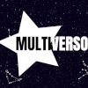

☆MULTIVERSO RPG: A WIKI☆
★SOBRE O RPG:
Multiverso é um RPG feito pelo meu parça *nome censurado*, mais conhecido como "CAJU"!
O RPG é de um sistema que o próprio Caju fez!
Essa aqui é uma wiki especial feita pro aniversário do Caju! Boa leitura!
★Páginas: